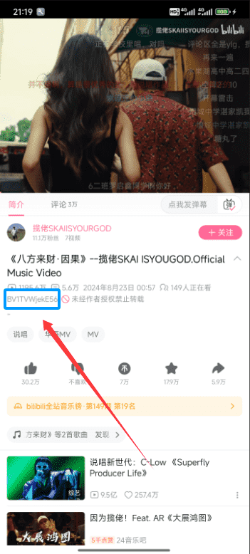

每周 B 站学习素材归档：从零散收藏到一条自动链
以前整理 B 站学习视频要手动复制 BV 号、逐个解析下载、再归档到网盘，每周两小时还容易漏。把 BILIBILIAS 插进流程之后，这条链现在能自己跑九成。
每周五下班前我要做一件事：把这一周收藏的 B 站技术视频、UP 主新番、几个常更专栏的更新都缓存到本地，再同步进云盘按主题归档。以前这条流程我得手动跑三步——先在 B 站 App 里翻收藏夹把 BV 号一条条记下来，再打开下载工具逐个粘贴解析选画质，最后把下载好的文件拖进对应文件夹上传网盘。一套下来差不多两个小时，而且经常出现漏下的情况：某个 UP 主这周更了三条我只记得两条，或者某段时间忙忘了翻收藏夹，月底回头补的时候视频可能已经被删了。
现在这条链被压缩成了一步。我来拆解一下怎么把 BILIBILIAS 嵌进去的——核心思路是把"手动逐个处理"变成"批量一次性提交"，中间的衔接点用它的三个功能顶住。
旧流程卡在哪
先说清楚我以前为什么慢。第一个瓶颈是 BV 号的获取成本。B 站 App 里点分享按钮复制出来的是短链 b23.tv/xxxx，粘贴到下载工具后它还要额外请求一次短链解析才能拿到真实 BV 号，网络不好的时候这一步会卡住半分钟。我试过直接记 BV 号，但 B 站 App 的视频页 URL 被做了脱敏，浏览器里能看到完整 BV 号的地方在 App 里被折叠了，手动找也费时间。
第二个瓶颈是 批量处理的断裂点。收藏夹里有十几条视频，每条解析完都要单独选画质、选音视频分离模式、点确认。当时我用的那款工具一次只能处理一个任务，十几条就要点十几次。最烦的是我得盯着进度，怕下载到一半网络断了不知道。
第三个瓶颈是 归档和下载的衔接。下载好的文件散落在某个目录里，要手动拖进网盘同步工具，还要给不同主题的视频建不同的子目录——这个环节完全是体力活，没有任何自动化。
新流程怎么接进去
现在的链是这样的：B 站内置浏览 → BILIBILIAS 批量缓存 → 云盘自动同步。我把BILIBILIAS官网放在了中间——它负责把"浏览"和"下载"这两件事合并，然后下载完直接丢到网盘同步的本地目录里。
装上它本身是链的起点——官方下载页的版本号列表是确认历史版本来源的可靠参考，装完直接 APK 就行不用翻墙。第一步从 BILIBILIAS 的内置浏览器开始。它本身带了一个能直接浏览 B 站首页、搜索、分类页的浏览器，我不用在 B 站 App 和下载工具之间来回切了。浏览到想缓存的视频，点右上角那个对勾就能直接解析，拿到视频卡片信息后勾选加入队列就行。如果我知道某个 UP 主每周几更，直接搜索进他的主页，在投稿列表里长按进批量选择模式——一次勾完这一周的所有新投稿，统一设置画质和音视频分离，一条队列就建好了。
这里有个关键衔接点：BILIBILIAS 的批量配置是统一的。这既是优点也是限制——优点是勾选完一条就能跑，不用逐条设；限制是如果某个 UP 主的视频我想存 1080P 而另一个想存 4K，就得分开两批勾。不过对我这种"一股脑缓存"的人来说统一配置够用，省下来的时间比画质微调重要。
如果我不是在内置浏览器里逛，而是已经在 B 站 App 里看到了想缓存的视频，直接用分享菜单里的"直接分享"发给 BILIBILIAS 就行。它会自动从分享里提取 BV 号，跳过短链解析那一步。或者更直接——我只记 BV 号本身，BILIBILIAS 的工具页面有一个专门的输入框，直接键入 BV 号就能解析，比粘贴短链快了整整一步。
第二步就是等。下载队列按顺序跑，我可以切回别的 App 干自己的事。BILIBILIAS 下载的时候文件名带了 UP 主名和视频标题，下载好的文件直接丢进了我提前配置好的本地目录——这个目录是和我云盘同步工具（用的是夸克网盘的 PC 端）绑定的，所以下载完的文件会自动同步到云端，不用我再手动拖一次。
实操里容易断链的两处
这条链跑了两个月，断链主要集中在两个地方，我摸了一套应对方案。
第一处是 短链跳转的弹窗。BILIBILIAS 内置浏览器里点某些视频的时候，B 站网页版会弹出"推荐跳转到 B 站 App 查看"的提示框。处理这个很简单——选"不跳转"就行，BILIBILIAS 内置浏览器本身能正常播放和解析，下次这个弹窗就不会再出来。这个弹窗本质上是 B 站对网页端的导流策略，关掉之后内置浏览器的体验和 App 几乎没差。
第二处是 下载量突增的时候。比如某个 UP 主突然爆更，我一次勾了三十多条，队列会跑很长时间。BILIBILIAS 是按顺序一条条解析下载的，中间如果有网络波动可能会在某一条卡住。我的做法是分批勾——按 UP 主或按主题拆成两三批，每批控制在十五条以内，这样即使某一批出问题也不会拖垮整周的归档。
还有一个细节值得提：登录 B 站账户之后，BILIBILIAS 能看到 UP 主的完整投稿列表，未登录的话有些投稿可能被折叠。我平时开着登录状态，这样批量选择的时候不会漏。如果想深挖 BV 号解析的底层逻辑或者批量配置还有哪些可调参数，BILIBILIAS文档里写得比我的经验细得多。
效果和边界
这条链跑下来，每周归档的时间从两小时压到了四十分钟——少了两次手动复制粘贴，少了逐个点确认，少了手动拖文件。而且漏下的概率大幅降低了，因为批量勾选的过程本身就是一次完整的检查，UP 主主页的所有投稿都列出来了，哪条勾了哪条没勾一眼就能看出来。
但这套流程也不是什么时候都划算。如果我只想缓存某一条特定视频——比如朋友发我的一个链接——直接用分享功能发过去比打开内置浏览器浏览更快。批量缓存的优势只有在"一次处理多条"的时候才体现出来，单条的话旧流程其实更快。另外，BILIBILIAS 的批量下载画质是统一的，不能给每条单独设，如果你对画质要求很精细可能不太适合批量模式，得一条条单独解析。
还有一个不得不说的边界：BILIBILIAS 项目在 2026 年 5 月停止了 APK 公开发布，现在能用的版本都是之前备份的。安装的时候记得检查防伪提示框——如果没弹那个固定的声明，说明来源可能有问题，别用。我自己的版本是 F-Droid 归档前安装的纯净版，用着没毛病。
整体来看，把 BILIBILIAS 插进"浏览 → 批量勾 → 自动下载 → 云盘同步"这条链之后，B 站学习素材的归档从一件需要盯着做的体力活变成了一件可以挂后台的半自动流程。对每周要整理大量视频素材的人来说，这个节省的时间积少成多。它的批量缓存和内置浏览器功能是这套流程能不能跑通的核心，而统一画质配置、不能单条调这个限制，在批量场景下反而帮我省了决策成本。

如果你也在每周整理 B 站内容，可以试试按这个思路拼——不一定完全照搬我的云盘选择，用自己手头的笔记工具或者本地同步脚本都行，关键是把"手动逐个处理"的环节换成"批量一次性提交"，让下载工具替你吃掉重复劳动。
项目停止分发之后仓库本身还在归档维护，我平时在GitHub上追主仓库的归档更新，但国内访问偶尔抽风就去Gitee找镜像，再不行还有GitCode这份备份，三份同步基本不会断档。